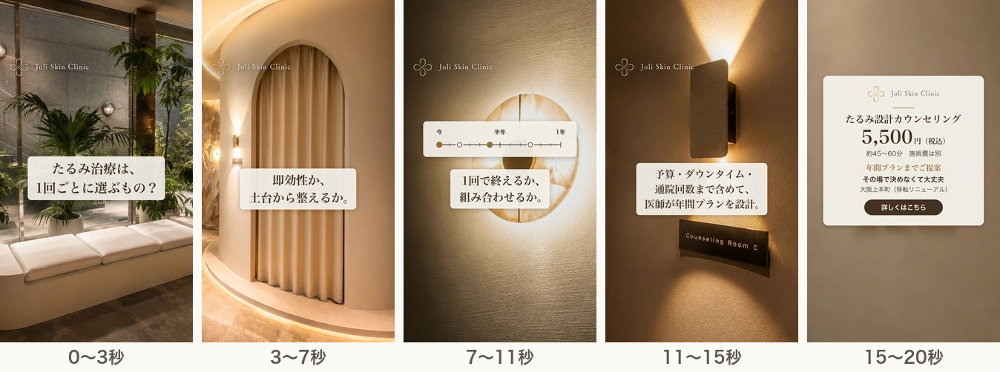
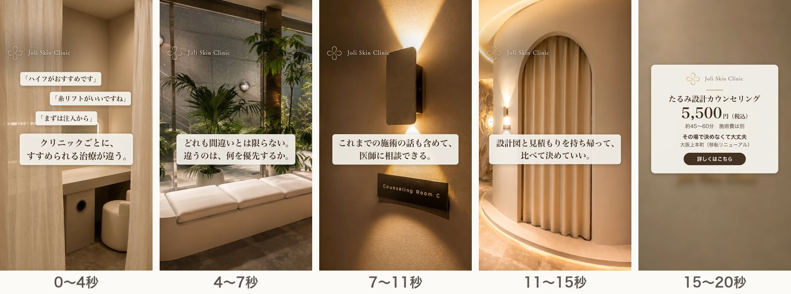

社内検討用の資料です。クリニックの公式ページではありません。
2026年10月29日
A〜Cと重ならない視点で2案を追加した。LPに書いてあるのに広告でまだ使っていない価値と、競合3院の打ち出しで空いているところから作った。2本とも、A〜Cと同じ写真とRunwayの4カットで動画（字幕・ロゴ・BGM入り、ナレーションなし）を書き出し済み。動画を見る
A・B・Cはどれも「今、何を選ぶか」の話である。LPにはそれ以外に、まだ広告にしていない価値が2つある。
| LPに書いてあること（広告で未使用） | 競合3院の打ち出し | 案 |
|---|---|---|
| 「即効性を求めるべきか、土台から整えるべきか」「1回で完結か、複数回・組み合わせか」「予算・ダウンタイム・通院回数を加味した現実的なプラン」、FAQ「年間プランまでご提案可能」 | YUTAKA：院長が担当・相談料3,300円／Urara：VECTRAの3D画像／ロジック：部位や痛みへの不安。長い期間の計画を入口にしている院はない | D |
| こんな方に「複数のクリニックで違う提案を受け、判断に迷っている方」「何度か施術を受けてきたが、効果に納得できていない方」 | 3院とも初めての人に向けた説明が中心。ほかの院の提案と比べたい人に向けた打ち出しはない | E |
競合は公式サイトの打ち出しを比べたもので、競合の広告やその成果は見ていない。
| 案 | 視点 | 狙う人 |
|---|---|---|
| A「結局どれがいいの？」 | 機械の名前で迷う | 調べて比べている人 |
| B「たるみの原因は、ひとつじゃない」 | 原因（層） | 理由から知りたい人 |
| C「決める前に、相談だけ。」 | 当日の流れ・即決しなくていい | 初めてで不安な人 |
| D「1回より、1年で考える。」 | 時間（1年の計画・予算） | 長く続けることや費用を考える人 |
| E「提案が、クリニックごとに違う。」 | 比較・見直し | ほかの院で相談・施術を受けたことがある人 |
1回ごとに施術を選ぶのではなく、予算・ダウンタイム・通院回数を含めて1年の計画で考える、という視点。単発の施術を受けてきた人や、費用が気になって踏み出せない人に向ける。

| 秒 | 画面 | 字幕 | ナレーション |
|---|---|---|---|
| 0〜3 | P2 待合（Runway・横にスライド） | たるみ治療は、1回ごとに選ぶもの？ | 字幕と同じ |
| 3〜7 | P1 アーチ（Runway・前進） | 即効性か、土台から整えるか。 | 字幕と同じ |
| 7〜11 | P7 照明（Runway・暗め）＋「今／半年／1年」の目盛りに点が4つ置かれる図 | 1回で終えるか、組み合わせるか。 | 字幕と同じ |
| 11〜15 | P4 Counseling Room（ゆっくり拡大） | 予算・ダウンタイム・通院回数まで含めて、医師が年間プランを設計。 | 字幕と同じ |
| 15〜20 | P8＋終わりの案内 | 共通の案内に「年間プランまでご提案」を追加 | たるみ設計カウンセリング、5,500円。 |
目盛りの図は施術名や回数を示さない。点の形（塗りと輪）を変えて「組み合わせる」ことを表すだけにした。
ほかの院での提案や施術を否定せず、比べるための材料を渡す、という視点。持ち帰れる設計図と見積もりを「比べて決めていい」という形で見せる。すでに何院か相談した人や、施術を見直したい人に向ける。

| 秒 | 画面 | 字幕 | ナレーション |
|---|---|---|---|
| 0〜4 | P5 パウダースペース（Runway）＋提案カードが3枚重なる（「ハイフがおすすめです」「糸リフトがいいですね」「まずは注入から」） | クリニックごとに、すすめられる治療が違う。 | 字幕と同じ（カードが重なる最初の約1秒は声なし） |
| 4〜7 | P2 待合（Runway） | どれも間違いとは限らない。違うのは、何を優先するか。 | 字幕と同じ |
| 7〜11 | P4 Counseling Room（ゆっくり拡大） | これまでの施術の話も含めて、医師に相談できる。 | 字幕と同じ |
| 11〜15 | P1 アーチ（Runway） | 設計図と見積もりを持ち帰って、比べて決めていい。 | 字幕と同じ |
| 15〜20 | P8＋終わりの案内 | 共通の案内 | たるみ設計カウンセリング、5,500円。 |